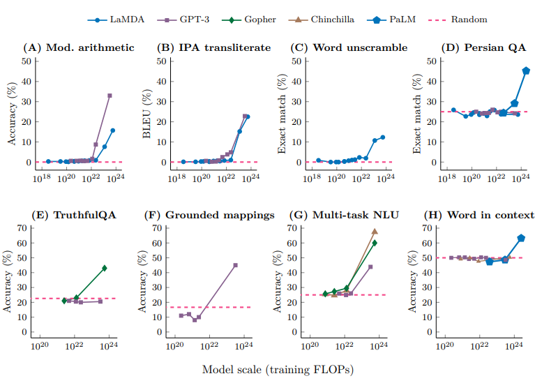
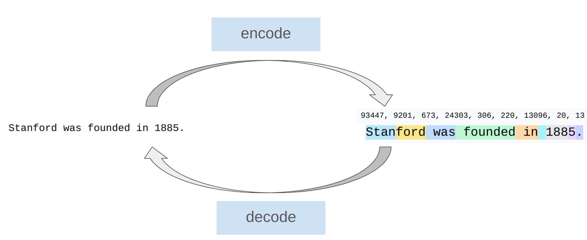
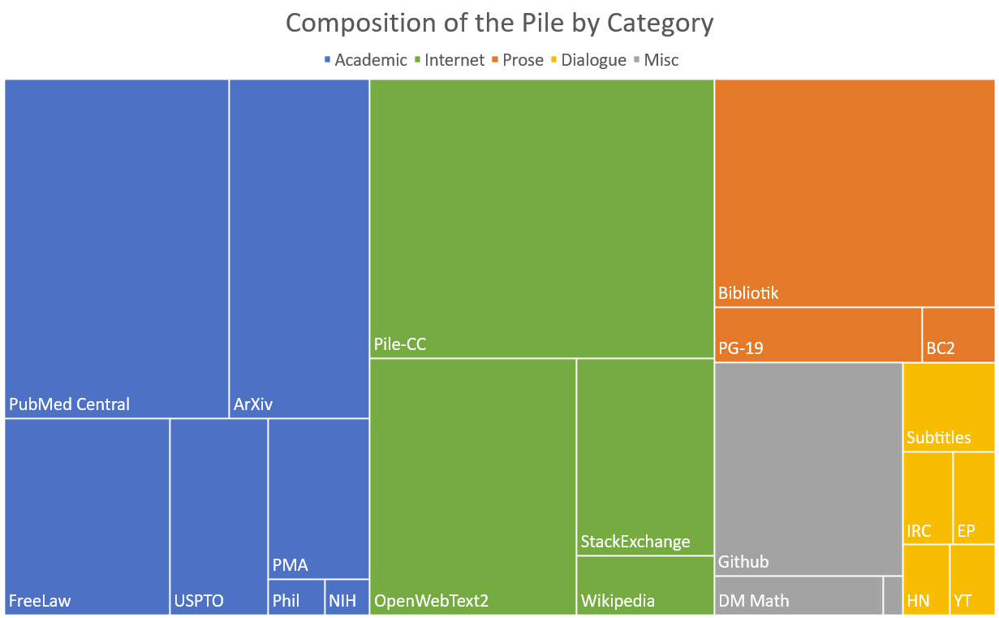

May 2026 · ~30 min read · Spring 2026 offering, taught by Tatsunori Hashimoto and Percy Liang
My structured notes on the opening lecture of Stanford's CS336 “Language Models from Scratch”. The post weaves together the official slide content with the professor's spoken commentary so you can read the lecture without rewatching 79 minutes of video. The first half is the course-level “why” and the unit roadmap; the second half is the first technical deep dive, tokenization.
All slide images and verbatim quotes are reproduced for educational summary; full credit and pointers to the original material above.
1. Welcome — what's new in the Spring 2026 offering
The CS336 Spring 2026 teaching team. The course is taught by Tatsunori Hashimoto and Percy Liang.
This is the 3rd offering of CS336. Past lecture videos are on YouTube (the Spring 2025 playlist is the most recent before this one). The Spring 2026 version keeps the same “from scratch” ethos but trims some material and adds modern topics:
Same from-scratch philosophy: you build things.
Prioritize high value-per-time concepts — “don't lose the forest for the trees.”
More coverage of modern LM ingredients: mixture of experts, long-context, agents.
2. Why this course exists
Hashimoto's framing of the problem is a hierarchy of abstraction that has crept up over a decade:
2016: researchers implemented and trained their own models.
2018: researchers downloaded models (e.g., BERT) and fine-tuned them.
Today: researchers prompt API models (GPT, Claude, Gemini).
Each step up the ladder boosted productivity, but the abstractions are leaky. Unlike programming languages or operating systems, you cannot reliably treat a frontier LM as an opaque black box and expect to do new fundamental research on top of it.
“The problem two years ago was that researchers were becoming disconnected from the underlying technology. People were treating models as opaque APIs, and you can't really do fundamental research that way — the abstractions leak in important ways.”
— Tatsunori Hashimoto, paraphrased from the lecture
The course's philosophical thesis is a single line: understanding via building. But that runs straight into a practical wall — the industrialization of language models.
2.1 The industrialization of frontier models
The lecture uses a 19th-century industrialization painting as the visual metaphor: training frontier LMs has become a factory activity, not a craft.
2025: xAI built a cluster with 230K GPUs for training Grok (Musk announcement).
There are no public details on how the latest frontier models are built. As an illustration, the GPT-4 technical report's training-details section is, intentionally, this:
The GPT-4 technical report (OpenAI 2023) deliberately discloses no architecture, training corpus, optimizer, or scale details. This is the modern norm for frontier closed models.
Frontier-scale models are simply out of reach for a class. You could build a small language model (under 1B parameters), but small LMs are not always faithful miniatures of large LMs. Two concrete examples:
Example 1. The fraction of FLOPs spent in attention vs MLP changes with scale (Stephen Roller, 2022). Tradeoffs that look optimal at 100M parameters look wrong at 100B.

Example 2. Many capabilities only emerge past some scale (Wei et al., 2022). At small scale you may never see them at all.
2.2 What of this knowledge actually transfers?
The lecture argues there are three kinds of knowledge involved in building frontier models, and they transfer at very different rates:
Mechanics
How a Transformer block works.
How model/data parallelism shards a graph across GPUs.
What the optimizer is actually doing on each step.
Transfers fully. Doesn't change with scale.
Mindset
Squeeze the most out of the hardware.
Take scaling seriously when making design decisions.
Treat efficiency as a first-class metric, not a polish.
Transfers fully. It's a way of thinking.
Intuitions
Which dataset mix yields the lowest loss.
Whether a particular activation function is “better”.
Pre-norm vs. post-norm, RoPE base 10k vs. 500k, etc.
Transfers only partially. Many small-scale intuitions just don't hold at large scale.
The course can teach mechanics and mindset reliably. It can only partially teach intuitions, and some design decisions are just not (yet) theoretically justifiable — they come from experimentation. The classic example shown in lecture is from the SwiGLU paper:
The closing line of Shazeer (2020) attributing the improvement of SwiGLU over ReLU to “divine benevolence”. The class will not be able to derive every empirical win; some of them are honestly just “it works.”
2.3 Reframing “The Bitter Lesson”
The lecture explicitly pushes back on a common misreading of Sutton's Bitter Lesson:
Wrong interpretation: “Scale is all that matters; algorithms don't matter.” Right interpretation: “Algorithms that scale are what matters.”
That is, you don't get to throw algorithms away — you have to choose the ones that compound with more compute. From there, an equation:
accuracy = efficiency × resources
At small scale, you can be wasteful and brute-force your way to numbers. At large scale you cannot, because efficiency multiplies the resource budget. Hernandez & Brown (2020) measured a 44× algorithmic efficiency gain on ImageNet between 2012 and 2019 — nearly two orders of magnitude that came from the algorithm side, not bigger GPUs.
The course's framing question, then, is the one that frontier labs ask too: what is the best model one can build given a fixed compute and data budget? Maximize efficiency.
3. The language-model landscape, era by era
Before diving into the “how”, the lecture walks the history. Each era's defining contributions:
Pre-neural (before the 2010s)
Shannon (1950): the first “language model”, used to measure the entropy of English.
N-gram LMs (Brants+ 2007): dominant in MT and speech recognition for decades.
Neural ingredients (2010s)
LSTM (Hochreiter & Schmidhuber 1997).
First neural LM (Bengio+ 2003).
Seq2seq (Sutskever+ 2014) and attention (Bahdanau+ 2014) — both born in machine translation.
Adam optimizer (Kingma+ 2014).
Transformer (Vaswani+ 2017) — for machine translation, of all things.
Mixture of Experts (Shazeer+ 2017); model parallelism (Huang+ 2018, Megatron-LM 2019, ZeRO 2019).
These are approaching closed models on most benchmarks.
Open-source (weights + paper + code + data)
AI2's OLMo family (Groeneveld+ 2024 → OLMo-3 2025).
NVIDIA's Nemotron; Stanford's own Marin (open development, not just open release).
Why this matters for CS336: the course can teach you to build frontier-grade LMs precisely because the open community has now reverse-engineered enough of the recipe. As Hashimoto put it: “Ideas from open models enable us to teach CS336.”
3.1 The definition of “language model” keeps shifting
One slide stuck out for me as a useful frame:
What is a language model?
2018 (BERT): something you fine-tune.
2020 (GPT-3): something you prompt.
2022 (ChatGPT): something you talk to.
2026 (agents): something that acts autonomously.
The underlying object — attention, kernels, optimization — barely changed. What changed are the specs imposed on top: longer context, much stricter inference efficiency, tool use, multi-turn reasoning.
4. What is an “executable lecture”?
A small but neat detail about the course format. CS336's lectures are executable: each lecture is a Python program whose execution renders the slides. The lecture I'm taking notes from here is literally lecture_01.py, and the “slides” you saw above are calls like image("images/gpt4-no-details.png", width=600) inside Python functions named welcome(), why_this_course_exists(), current_lm_landscape(), and so on.
Two benefits the instructors call out:
You can view and run the code directly — the slides are the code.
You can see the hierarchical structure of the lecture: every slide has a stack trace back to a named function, so the “where am I” problem disappears.
It also explains the structure of these notes: I lifted the section headers straight from the function names in the trace JSON.
5. Course logistics
5-unit class. Treat that warning seriously — the workload is famously heavy. A quoted Spring 2024 course evaluation: “The entire assignment was approximately the same amount of work as all 5 assignments from CS 224n plus the final project. And that's just…”
5 assignments: basics, systems, scaling laws, data, alignment. No scaffolding code — just unit tests and adapter interfaces to check correctness against.
Workflow: implement locally for correctness, then run on cluster for benchmarking (accuracy and speed). Some assignments have a leaderboard (e.g., minimize OpenWebText perplexity given 45 minutes on a B200).
AI policy: coding agents can solve the assignments, but you won't learn anything. The course ships an AGENTS.md that asks the AI to be pedagogically-minded rather than just write the solution.
Compute: sponsored by Modal. Cluster details in the course-internal guide.
Following along at home: all materials and assignments are public. Lectures are recorded via CGOE and published to YouTube.
5.1 Who should take this course?
You'll enjoy this course if…
You should probably skip it if…
You have an obsessive need to understand how things work.
You actually want to get research done this quarter.
You want to build research-engineering muscles.
You want the hottest techniques (multimodality, RAG, etc.) — take a seminar.
You want to learn what the “recipe” for a modern LM actually is.
You want good results on a specific application — prompt or fine-tune an existing model.
6. The five course units
The course is organized into five units that each conclude in a public assignment. Below is a precise, brief summary of what each unit actually covers, lifted from the lecture's roadmap section. I'm treating this as the most useful map of the course for anyone deciding whether to commit.
Unit 1 · ~2 weeks
Basics — train a working LM end-to-end
Goal: by the end of this unit, you can train a small Transformer LM from scratch and understand every component. Three sub-pieces:
Tokenization. What are the “atoms” the model operates on?

BPE tokenization in action: a raw string becomes a short sequence of variable-length chunks.
The workhorse is Byte-Pair Encoding (Sennrich+ 2015). The motivation: shorten the context (a 1000-byte input becomes ~250 tokens) and allocate model capacity adaptively, with more attention going to interesting chunks. The aspirational goal is tokenizer-free architectures that operate directly on bytes (BLT, T-FREE, H-Net), but those haven't been scaled to the frontier yet.
Model architecture. Start from the original Transformer:
The original Transformer block (Vaswani+ 2017).
Modern refinements you'll implement: SwiGLU activations; RoPE positional encodings; RMSNorm / QK-norm / pre-norm vs. post-norm; sparse / GQA / MLA attention; SSM / Mamba / linear-attention variants; MoE MLPs; and the shape hyperparameters (depth, width, heads, experts).
Assignment 1. Implement BPE, the Transformer, cross-entropy, AdamW, the training loop; do resource accounting; train on TinyStories and OpenWebText. Leaderboard: minimize OWT perplexity in 45 minutes on a B200. GitHub.
Recurring principle: every architectural choice is a balance among expressivity (can the model represent the dependency), stability (do gradient/parameter norms stay in the goldilocks zone), and efficiency (does it run fast on real hardware).
Unit 2
Systems — squeeze the hardware
The whole framing here is minimize data movement. Everything else is a corollary.
The memory-and-compute layout that every kernel decision negotiates: parameters live in HBM, compute happens on SMs, and bytes have to travel between them.
Resource accounting. For a B200, you can do roofline math: 2.25 PFLOP/s in bf16, ~8 TB/s memory bandwidth. Whether a given kernel is compute-bound or memory-bound is just an arithmetic-intensity calculation.
DGX B200 topology. Class assignments run on Modal-provided B200s.
Kernels. Each primitive op in PyTorch launches a standard kernel; custom kernels exist to amortize HBM round-trips. The cardinal example is FlashAttention's tiling (read HBM once, compute A and B fused, write HBM once — vs. the naive read-compute-write × 2). You'll work in Triton (the practical sweet spot above CUDA), with sideways looks at CUTLASS and ThunderKittens.
Parallelism. When you have 1024 GPUs, the same data-movement principle holds — just at a different layer. Shard the parameters, activations, gradients, and optimizer states across GPUs using a mix of data, tensor, pipeline, sequence, and expert parallelism, glued by the classic collectives (gather, reduce, all-reduce).
Inference. Two phases, very different in character:
Prefill (process the whole prompt) is compute-bound, like training. Decode (generate one token at a time) is memory-bound and is where most engineering effort goes.
Speculative decoding: a small draft model proposes several tokens, the big model scores them in parallel — exact decoding, just faster.
Systems: fused kernels and continuous batching for throughput.
Assignment 2. Fused RMSNorm in Triton; distributed data-parallel training; optimizer-state sharding; benchmark and profile. GitHub. Recommended companion: How to Scale Your Model.
Unit 3
Scaling laws — hyperparameters at a budget you don't have
The motivating question: If I had 1025 FLOPs of compute, what hyperparameters would I use? You can't actually do hyperparameter tuning at full scale — it's too expensive. The conceptual shift is to think in scaling recipes rather than single scales.
Run experiments to compute the loss at small scales (e.g., up to 1024 FLOPs).
Fit a scaling law that predicts the loss of a scaling recipe at the target scale.
Now you can both optimize the recipe targeting a large scale using only small-scale experiments, and predict the eventual loss before running the big job.
You'll also work with hyperparameter transfer parameterizations (muP family) so that good hyperparameters at small scale stay good at large scale — predictability is at least as important as optimality.
The classic isoflop curve from Chinchilla:
Hoffmann+ 2022: for each compute budget, find the model size that minimizes loss; fit a curve and extrapolate. Headline result: D ≈ 20·N (a 70B-param model wants ~1.4T tokens). Caveat the slide makes explicit: this ignores inference costs, which push you toward smaller models trained on more data than Chinchilla suggests.
Marin preregisters a loss prediction for an in-flight training run. The class will check next time how the actual loss compared to the preregistered curve.
Assignment 3. Submit small training jobs against a fixed FLOPs budget; fit a scaling law to the data points; submit extrapolated hyperparameters and a loss prediction. Leaderboard: minimize loss given FLOPs budget. GitHub.
Unit 4
Data — the underrated half of the pipeline
Hashimoto opened this section with: “data does not just fall from the sky.” Two threads:
Evaluation serves two purposes: internally to guide model development (smoothness across scales and relative ordering of variants matter more than absolute numbers), and externally to measure real-world quality (ecological validity matters here). The course teaches you to maintain both: perplexity on private, non-internet documents (to dodge contamination), plus advanced benchmarks like GPQA, HLE, SWE-Bench, Terminal-Bench.
Data curation spans:

The Pile (Gao+ 2020): an example of how pretraining corpora are stitched together from webpages, books, arXiv, GitHub, etc. Real corpora are messier still.
Sourcing. Web crawl, books, arXiv, code. Lawyer questions about fair use and licensing aren't optional anymore.
Transformation. Convert HTML / PDF / directories to clean text; extract main content.
Deduplication. Bloom filters or MinHash — saves compute, reduces memorization.
Data mixing. How much to upweight each source (DoReMi, REGMIX).
Synthetic data. Use an LM to rewrite or augment real data (WRAP, etc.) so it more closely matches downstream tasks.
Three buckets that show up downstream:
Pretraining data: large and diverse.
Mid-training data: high quality, including long-context.
Post-training data: supervised fine-tuning (conversations, agentic traces with tool calls).
Assignment 4. Common Crawl HTML → clean text; train quality/harm classifiers; deduplicate with MinHash; leaderboard on perplexity given a token budget. GitHub.
Unit 5
Alignment — improving the model from weak supervision
So far in the course you've trained the model under full supervision: predict the next token. Alignment is what you do once the model is reasonable — you improve it from weak supervision, in cases where it's easier to critique than to generate.
The basic template is the same across algorithms:
Generate responses from the model.
Score those responses with a {human, verifier, LM judge}.
DPO (Rafailov+ 2023) — for preference data, much simpler to implement.
GRPO (Shao+ 2024) — removes the value function entirely; popularized by DeepSeek.
The honest caveats from the lecture: RL algorithms are unstable and hard to tune; at scale, this requires new infrastructure (inference with async rollouts); you're constantly trading off systems efficiency against on-policyness.
After the unit-by-unit tour, the lecture zooms out one more time. The class's organizing theme:
It's all about efficiency. Resources = data + hardware (compute, memory, bandwidth). The question is always: how do you train the best model given a fixed bundle of those resources?
Today we are compute-constrained, so every design choice in the course reflects squeezing the most out of a given chip:
Systems is openly about efficiency.
Tokenization exists because operating directly on raw bytes is elegant but compute-inefficient with today's model architectures.
Model architecture changes (KV-cache sharing, sliding-window attention, MoE, MLA, GQA) are usually motivated by reducing memory or FLOPs at fixed quality.
Data filtering is the “don't waste compute updating on bad data” lens.
Scaling laws are how you avoid burning compute on bad hyperparameter choices.
And, as the slide deck notes: tomorrow's lecture we'll become data-constrained. Compute scarcity is the current binding constraint, but it won't stay that way.
8. First technical deep dive: tokenization
The last ~25 minutes of the lecture are the real start of the course content. The unit is “inspired by Karpathy's tokenization video” (his words) — if you want a longer treatment, watch that.
8.1 What is a tokenizer, exactly?
A language model places a probability distribution over sequences of tokens — integer indices into a vocabulary. So we need a pair of procedures:
encode(string) → List[int] — converts raw text to tokens.
decode(List[int]) → string — converts tokens back to text.
Raw text is Unicode. There's no single “right” way to chunk Unicode into a fixed vocabulary, and the lecture walks through the three obvious options to show why they're all bad — before motivating the real workhorse, BPE.
8.2 Character tokenizer
Vocabulary = the set of Unicode codepoints in the training corpus. encode maps each character to its integer codepoint; decode goes back. Simple, lossless.
Property
Verdict
Why
Vocabulary size
Bad
Unicode has ~150,000 codepoints. Most are rare emoji / CJK / historical scripts that you'll rarely see during training, but each one needs its own embedding row.
Coverage of unseen text
Mediocre
Anything you didn't see at train time (a new emoji, an obscure script) is OOV.
Compression
Bad
1 character → 1 token. A 1000-character input is a 1000-token sequence. With quadratic attention, that's expensive.
So character tokenization fails on two of the three things you want from a tokenizer (small vocab and good compression).
8.3 Byte tokenizer
Vocabulary = the 256 possible byte values. Every string can be encoded as UTF-8 bytes; the encoder maps each byte to its int.
Property
Verdict
Why
Vocabulary size
Excellent
Exactly 256. Tiny embedding matrix.
Coverage
Perfect
Every Unicode string has a UTF-8 byte representation. No OOV ever.
Compression
Terrible
Same problem as character but worse: a single CJK character can be 3 UTF-8 bytes, an emoji 4. You've replaced a 1000-char input with a 1500–4000 token sequence.
The byte tokenizer has zero compression (in fact, negative compression on non-ASCII text). Operating on raw bytes is the “dream” in the long term, but with today's quadratic-attention architectures the sequence-length blowup makes it impractical for frontier-scale models. (Hence: research on byte-level models like ByT5, MegaByte, BLT.)
8.4 Word tokenizer
Vocabulary = the set of distinct “words” in the corpus (after some splitting rule on whitespace and punctuation).
Property
Verdict
Why
Vocabulary size
Bad
Real corpora have hundreds of thousands to millions of distinct surface forms once you count typos, URLs, code identifiers, etc. Long tail kills the embedding budget.
Coverage
Bad
Any new word at inference time is OOV — you have to fall back on a special <unk> token.
Compression
Good
1 word → 1 token. Sequence length is reasonable.
Word tokenizers buy compression at the cost of completeness. They were the historical standard before BPE took over; they died because OOVs are a much bigger problem than you'd guess from a clean test set.
Count the frequency of every adjacent pair of tokens in the corpus.
Find the most frequent pair, merge it into a single new token, add that token to the vocabulary.
Repeat until the vocabulary reaches the desired size (e.g., 32K, 50K, 100K, 200K).
At inference, you apply the same merge rules in the same order to a new string. The result, on real corpora, hits a sweet spot:
Property
BPE
Vocabulary size
Bounded (you pick it).
Coverage
Perfect (falls back to the byte level for anything truly unseen).
Compression
Good (~4–5 bytes per token on English text in practice).
Adaptive capacity
Yes — common words become single tokens; rare strings stay as multi-token sequences.
This is what GPT-2, GPT-3, GPT-4, Llama, Claude, and basically every modern frontier model uses (with subtle variants like SentencePiece's unigram model and the byte-level pre-tokenization regex from GPT-2).
The lecture ends with one important subtlety:
“A word and its preceding space are different tokens. ‘hello’ and ‘ hello’ live at different vocabulary indices, with separate embeddings, and the model has to learn that they mean the same thing.”
— from the byte-level pre-tokenization discussion, paraphrased
That asymmetry — that " hello", "hello", "Hello", " Hello" are four different tokens — explains a surprising amount of model behavior, from why prompts sometimes break on a single trailing space to why some old GPT-2 token IDs are “glitch tokens”.
8.6 The two properties any tokenization scheme must satisfy
Stepping back, the lecture's final framing on tokenization is a clean two-line spec that even byte-level-tokenizer-free schemes will have to meet:
The model (e.g., Transformer) should operate on chunks of the sequence — whether the sequence is text, video frames, DNA, or audio.
Those chunks should be variable in size, so model capacity can be allocated more generously to interesting chunks.
BPE is the current heuristic that meets both. Whatever replaces it — learned byte-grouping, hierarchical networks, latent “patches” — will have to as well.
9. Takeaways from lecture 1
The course's thesis is “understanding via building”, in a world where most ML research has drifted to prompting closed APIs.
Mechanics and mindset transfer; intuitions transfer only partially. Don't expect the class to give you a frontier model's secret sauce — expect it to give you the toolkit to build one and reason about one.
accuracy = efficiency × resources. Once you're compute-constrained, efficiency is what differentiates labs. CS336 is, fundamentally, a course about efficiency.
The five units have one through-line. Basics → Systems → Scaling → Data → Alignment is a stack where each layer trades some efficiency for some capability.
BPE wins because it is “data-driven plus byte-fallback”. It bounds vocabulary size, has perfect coverage, gets reasonable compression, and gives the model adaptive capacity — the four properties the other naive tokenizers each fail on one or more axes.
Personal note: the “four tokens for ‘Hello’” bit is the kind of detail you only fully internalize once you've implemented a BPE encoder yourself. Assignment 1 is that.
10. What's next
The next lecture, per the source: resource accounting — the FLOPs-and-memory math you need to design models that actually fit on the GPUs you have. I'll write that one up too when it lands.